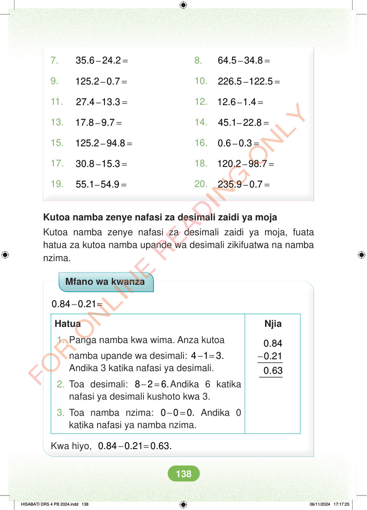

7. – = 35.6 24.2 8. – = 64.5 34.8 9. – = 125.2 0.7 10. – = 226.5 122.5 11. – = 27.4 13.3 12. – = 12.6 1.4 13. – = 17.8 9.7 14. – = 45.1 22.8 15. – = 125.2 94.8 16. – = 0.6 0.3 17. – = 30.8 15.3 18. – = 120.2 98.7 19. – = 55.1 54.9 20. – = 235.9 0.7 Kutoa namba zenye nafasi za desimali zaidi ya moja Kutoa namba zenye nafasi za desimali zaidi ya moja, fuata hatua za kutoa namba upande wa desimali zikifuatwa na namba nzima. Mfano wa kwanza - = 0.84 0.21 Njia Hatua 1. Panga namba kwa wima. Anza kutoa - 0.84 0.21 namba upande wa desimali: -= 4 1 3. Andika 3 katika nafasi ya desimali. 0.63 2. Toa desimali: - = 8 2 6.Andika 6 katika nafasi ya desimali kushoto kwa 3. 3. Toa namba nzima: - = 0 0 0. Andika 0 katika nafasi ya namba nzima. Kwa hiyo, - = 0.84 0.21 0.63. HISABATI DRS 4 PB 2024.indd 138 HISABATI DRS 4 PB 2024.indd 138 06/11/2024 17:17:25 06/11/2024 17:17:25